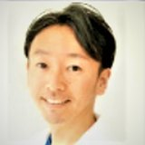

K2 副会長
遠山敏成 先生

K2 副会長
とおやま としなり
- 職種
- 歯科医師
- 所属
- 医療法人社団スターティス マイスター春日歯科クリニック練馬（理事長） ↗
- 地域
- 東京都練馬区（都営大江戸線 練馬春日町駅）
補綴・審美・咬み合わせを得意とし、2007年からジルコニアを臨床に取り入れてきた。デジタル技術を活用した治療で国内外の学会発表・講演を重ね、K2 副会長、Esthetic Explorers・K.I.M の理事を務める。
ハンズオンコース講師：臼歯の機能的な形態と接触方法
経歴CAREER
- 2002日本大学歯学部 卒業、日本大学歯学部付属歯科病院（クラウン・ブリッジ科）勤務
- 2003布川歯科医院、石川歯科クリニック、根本歯科医院、さいたま新都心デンタルクリニックで勤務（〜2006年）
- 2006マイスター春日歯科クリニック 開設（東京都練馬区）
- 2007ジルコニア修復を臨床に導入
- 2017マイスター春日歯科クリニック 移転開設
役職・所属学会AFFILIATIONS
役職
- K2 副会長
- Esthetic Explorers 理事
- K.I.M 理事
- 医療法人社団スターティス 理事長
所属学会
- 日本補綴歯科学会
- 日本顎咬合学会
- 日本歯科保存学会
- 日本歯科理工学会
- 日本接着歯学会
- Academy of Prosthodontics
- American Academy of Esthetic Dentistry
著書・講演・受賞などACTIVITIES
- 日本顎咬合学会 学術大会 優秀発表賞（Award of the Best Presentation 2015）。
- 共著『歯科医師・歯科技工士のための 最新ジルコニア修復 ─インレーから前歯部クラウンまで─』（別冊QDT、クインテッセンス出版、2021年）。
- 執筆：『あごたんストレッチ』（ソフトバンククリエイティブ）、『ファイバーポストレジンコアの臨床』（デンタルダイヤモンド）、『Digital Labo Style』（医歯薬出版）。英語論文7本（共著含む）、ザ・クインテッセンス、QDT、歯界展望、補綴臨床、歯科技工、日本歯科評論などに寄稿。
- 講演：日本臨床CADCAM学会、日本デジタル歯科学会、各地の歯科医師会（秋田市・徳山市・厚木市）、松風、トクヤマデンタルなど。
医療法人社団スターティス マイスター春日歯科クリニック練馬についてCLINIC
虫歯・歯周病・根管治療から、入れ歯、インプラント、審美セラミック、矯正、小児歯科、予防メインテナンスまでを行う。「健康な歯を守る治療」を掲げ、デジタル機器による術前シミュレーションや精密な治療に取り組んでいる。
- 歯を削りすぎず、自然な歯をできるだけ残す治療を重視している
- あごの動きに合わせた咬み合わせを大切にしている
- 担当歯科衛生士制度で、治療後も継続して口の健康を管理する